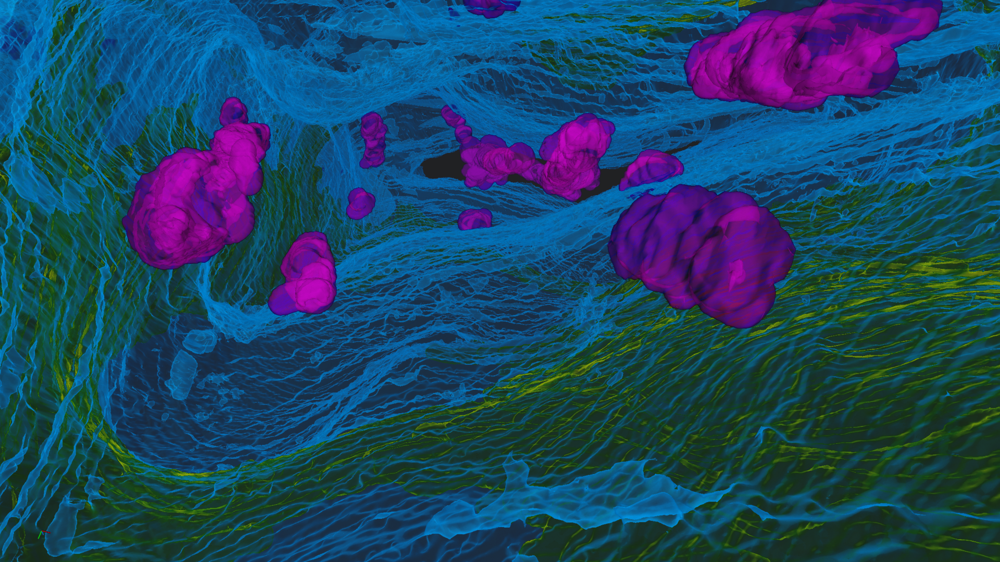
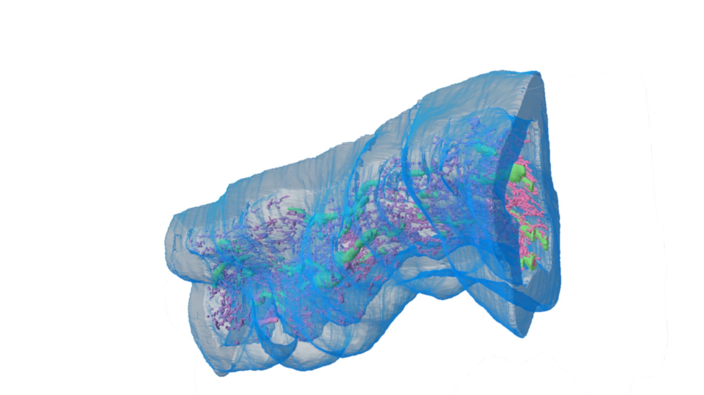
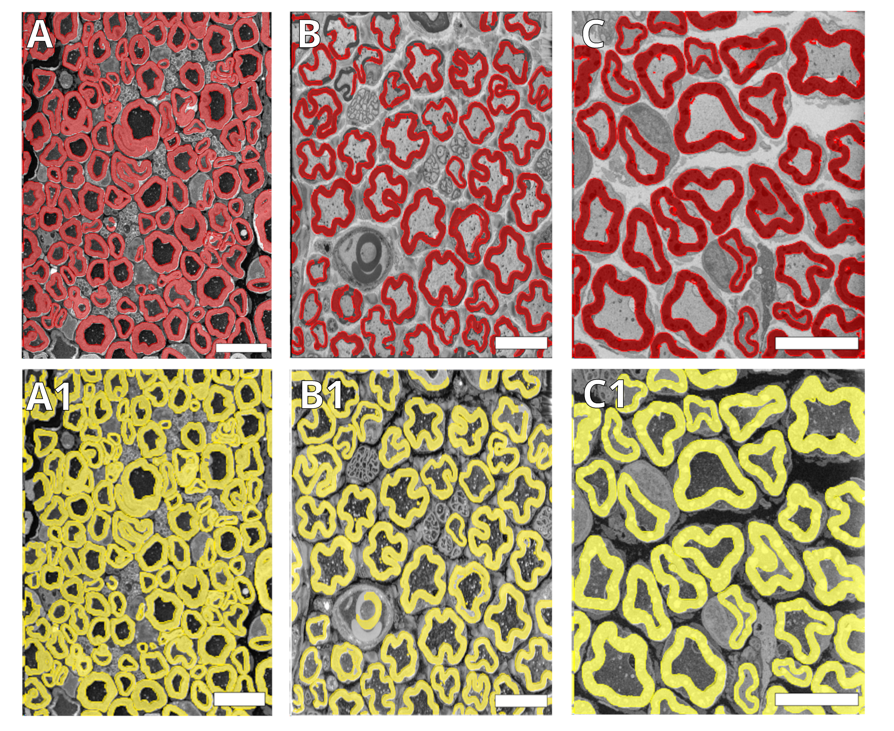
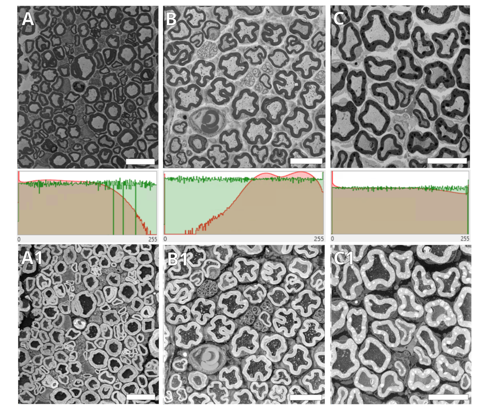

Published work
Peripheral nerve 3D reconstruction
SBF-SEM reconstruction and quantitative analysis of axon, myelin, mitochondria, and endoplasmic reticulum.
Computational Bioimaging · Volume EM · 3D Image Analysis
I develop computational workflows for biological microscopy, with a current focus on SBF-SEM, deep-learning segmentation, 3D reconstruction, and quantitative morphometry.
Current position: Research Associate, University of Milan-Bicocca

About
My work combines biological imaging with image processing and quantitative analysis. I currently analyze large Serial Block-Face Scanning Electron Microscopy (SBF-SEM) datasets of peripheral nerves and Dorsal Root Ganglia, including automated segmentation, 3D reconstruction, and morphometric analysis of neuronal and subcellular structures.
I work mainly with Python, deep learning, Arivis Pro, and Zeiss ZEN, and I also have experience with fluorescence microscopy and a broader background in molecular and cellular biology.
3D videos
Selected 3D reconstruction and segmentation results from SBF-SEM datasets. Published and unpublished material is clearly identified below.
SBF-SEM reconstruction and quantitative analysis of axon, myelin, mitochondria, and endoplasmic reticulum.
3D reconstruction and automated segmentation of neuronal, glial, nuclear, mitochondrial, and ER structures from SBF-SEM datasets.
Unpublished research. Preview shown for portfolio purposes only. Reuse requires permission.
Image gallery
Static examples showing reconstruction outputs, segmentation performance, and image-preprocessing workflows.

Representative 3D render from SBF-SEM reconstruction of peripheral nerve ultrastructure.

Representative still image from a 3D reconstruction of neuronal and satellite glial structures.
Unpublished research. Preview shown for portfolio purposes only. Reuse requires permission.

Generalized deep-learning workflow for automated segmentation of peripheral nerve ultrastructure across different staining protocols.

Example of CLAHE-based preprocessing used to improve image consistency before downstream segmentation and 3D analysis.
Software & analysis tools
Selected tools developed for EM image preprocessing, segmentation, 3D reconstruction, and statistical analysis of quantitative biological datasets.
Python workflow for EM image preprocessing and standardization, including CLAHE-based contrast enhancement and trained segmentation models for peripheral nerve and DRG data.
Open repository →Local application combining U-Net segmentation, SAM-assisted annotation, model training, and interactive 3D reconstruction of segmented EM image stacks.
Open repository →Interactive Streamlit workflow for biological morphometry, statistical comparisons, correlations, bootstrap confidence intervals, effect sizes, multivariate analysis, and allometric scaling.
Open repository →Selected publications
Contact
I am interested in scientific and core-facility roles involving bioimage analysis, microscopy data processing, 3D reconstruction, and development of computational workflows.